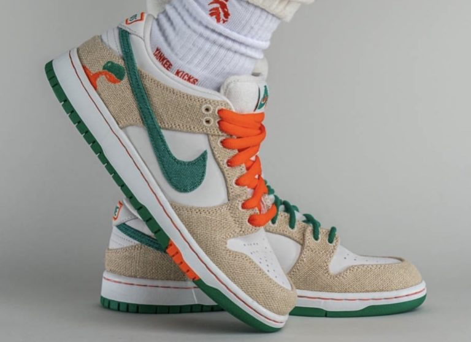
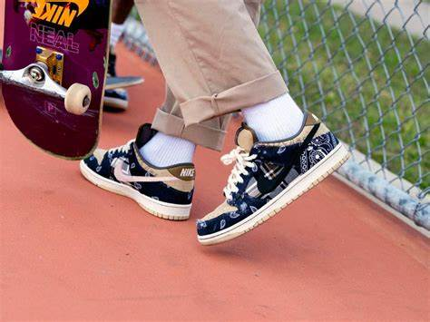

COLABORACIONES
Las colaboraciones
Las colaboraciones en la industria de los tenis, también conocidas como colaboraciones entre marcas, son el resultado de acuerdos entre dos o más entidades, generalmente marcas de calzado, diseñadores, artistas, celebridades u otras marcas de renombre. Estas colaboraciones suelen tener como objetivo combinar el estilo, la creatividad y la influencia de ambas partes para crear productos únicos y atractivos para los consumidores.
El proceso de creación de estas colaboraciones puede variar dependiendo de las partes involucradas y el propósito de la colaboración, pero generalmente sigue un proceso similar:
IDENTIFICACIÓN DE LAS PARTES INVOLUCRADASs: Las marcas de calzado buscan asociarse con diseñadores, artistas o celebridades que tengan una estética única o una base de seguidores fiel que pueda beneficiar a ambas partes.
NEGOCIACIÓN DEL ACUERDO: Las partes involucradas negocian los términos del acuerdo, que pueden incluir la división de ingresos, la cantidad de unidades producidas, la promoción del producto, entre otros aspectos.
DISEDÑO DEL PRODUCTO: Una vez que se ha alcanzado un acuerdo, las partes colaboran en el diseño del producto. Esto puede implicar la creación de un nuevo diseño desde cero o la modificación de un diseño existente para reflejar la estética de ambas marcas.
PRODUCCIÓN: Una vez que se finaliza el diseño, se procede a la producción del calzado en las instalaciones de fabricación de una de las marcas involucradas o de un fabricante externo.
MARKETING y LANZAMIENTO: Antes del lanzamiento del producto, se lleva a cabo una campaña de marketing para generar anticipación y generar interés en el producto. Esto puede incluir teasers en redes sociales, eventos de lanzamiento, colaboraciones con influencers, entre otros.
LANZAMIENTO y DISTRIBUCIÓN: Una vez que el producto está listo, se lanza al mercado a través de los canales de distribución habituales de las marcas involucradas, que pueden incluir tiendas físicas, tiendas en línea y minoristas especializados.
RECEPCIÓN y SEGUIMIENTO: Después del lanzamiento, se monitorea la recepción del producto por parte de los consumidores y se realizan ajustes según sea necesario. Además, las partes pueden considerar futuras colaboraciones en función del éxito de la primera.
ALGUNAS COLABORACIONES
Dunk High Deep Royal de AMBUSH x Nike
Air Jordan 6 Retro British Khaki x Travis Scott
SB Dunk Low Stars de Supreme x Nike
Blazer Low Classic Green de Sacai x Nike
Dunk High Beijing 2021 de Fragment x Nike
"LOS TENIS MAS CAROS DEL MUNDO"
Air Force 1 de Louis Vuitton y Nike por Virgil Abloh se celebrará del 20 al 31 de mayo de 2022 en el Green Point Terminal Warehouse de Nueva York. Gracias al gran talento de Abloh, esta colaboración estará presente en su colección Primavera-Verano 2022, que fue presentada antes de su fallecimiento el 28 de noviembre de 2021. Este monumental evento está abierto a todo el mundo y pondrá de relieve el diálogo creativo entre Nike y Louis Vuitton.
Dentro de la línea podrás encontrar 47 modelos de zapatillas Nike Air Force 1 firmados por el Director Artístico para las colecciones de hombre de Louis Vuitton en colaboración con Nike, donde se exhibirá de manera física y virtual en espacios inmersivos que reflejan el modo de presentación y los ámbitos de expresión propios de Virgil Abloh. También habrá una serie de instalaciones en Nueva York y otras ciudades del mundo.
El diseño digital multimedia combina la creatividad visual con la tecnología digital para producir contenido interactivo y cautivador. Así, permite a los diseñadores comunicar ideas, emociones y mensajes de manera efectiva a través de diversos medios digitales, brindando una experiencia envolvente.
MARCAS
LOUIS VUITTON.
DOLCE & GABBANA
AMBUSH
BALENCIAGA
ALEXANDER MCQUEEN
DIOR
Todos los derehos reservados YAEL RODRIGUEZ
Salas Cruz Luka
Silva Olvera Diego Giovani
Sanchez Gongalez Osvaldo
Solorsano Arias Ervin Alexis
- COPYRIGHT @ 2024